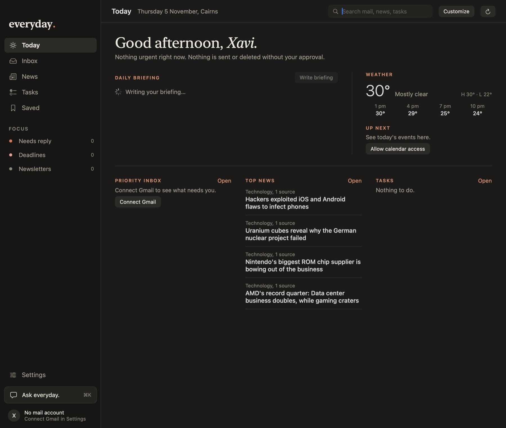
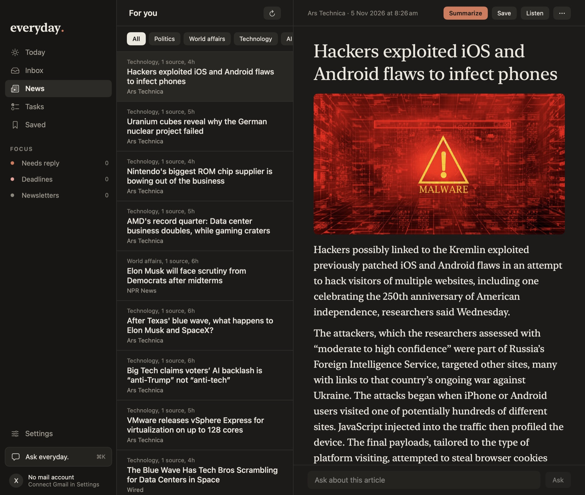

The app
A$1
A ready-to-run download. Drag to Applications and go. It helps keep the project alive.
Buy for A$1 One-off payment. Updates included.For macOS · open source
everyday. sorts your inbox, reads the news you care about, and writes your morning briefing. It runs on your Mac with your own AI key. No account, no servers, no analytics.
macOS 15 or later · Apple silicon and Intel
Every message is read and labelled: needs a reply, has a deadline, newsletter, promotion. The ones that matter float to the top, each with a one-line summary.


News
Real stories from sources you choose, with duplicates folded together and old stories dropped. Start by swiping through a deck: right for interested, left for not, up for love it.
Your day
Deadlines and to-dos in your email become suggestions you accept or dismiss. Each morning the app writes a short note: what needs you, what’s on the calendar, the weather, and the stories that matter.
Privacy
everyday. has no servers. Your mail, tasks and preferences live in a database on your Mac. Passwords and keys live in the macOS Keychain.
Mail, tasks, interests, saved stories and everything the app has learned about you.
Mail from your mail provider. Articles from their publishers. Your city name to a weather service.
You choose Gemini, Claude, OpenAI, a local model or Apple’s on-device model. A log shows every request and the exact text sent.
No account, no tracking, no analytics, no ads. The source is public so you can check.
Get it
A$1
A ready-to-run download. Drag to Applications and go. It helps keep the project alive.
Buy for A$1 One-off payment. Updates included.Free
Clone the repository and build it yourself. It’s the same code and the same app.
git clone github.com/…/everyday
cd everyday
./Scripts/bundle.shFor Apple silicon and Intel Macs on macOS 15 or later. Windows isn’t available yet.
The app isn’t signed with a paid Apple Developer ID yet. Open it once with right-click → Open, or go to System Settings → Privacy & Security and press “Open Anyway”. You only do this once. Building from source avoids the warning.
Your own. Add a key for Gemini, Claude or OpenAI, point it at a local model such as Ollama, or use Apple’s on-device model. You pay your provider directly, and Gemini has a free tier. The app works without any AI too: news, tasks and the inbox still run.
Only if you add a key, and only what you can see in the activity log. You can send subject lines and short snippets instead of full bodies, and signatures and quoted replies are always stripped first.
Anything with IMAP and an app password: Gmail, iCloud, Fastmail, Yahoo and more. Microsoft no longer allows app passwords on most Outlook accounts, so Outlook isn’t supported yet.
Not yet. This version is built natively for the Mac.